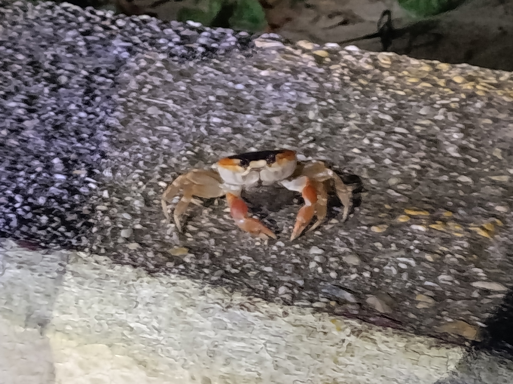
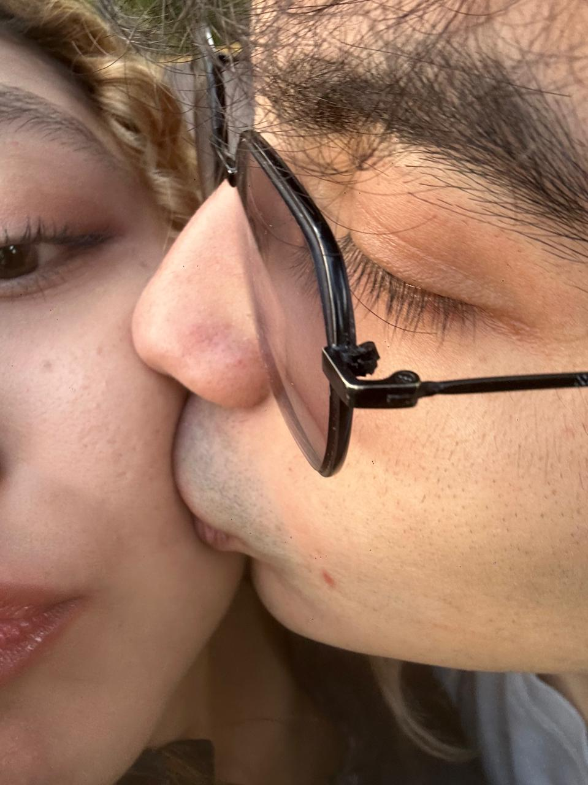
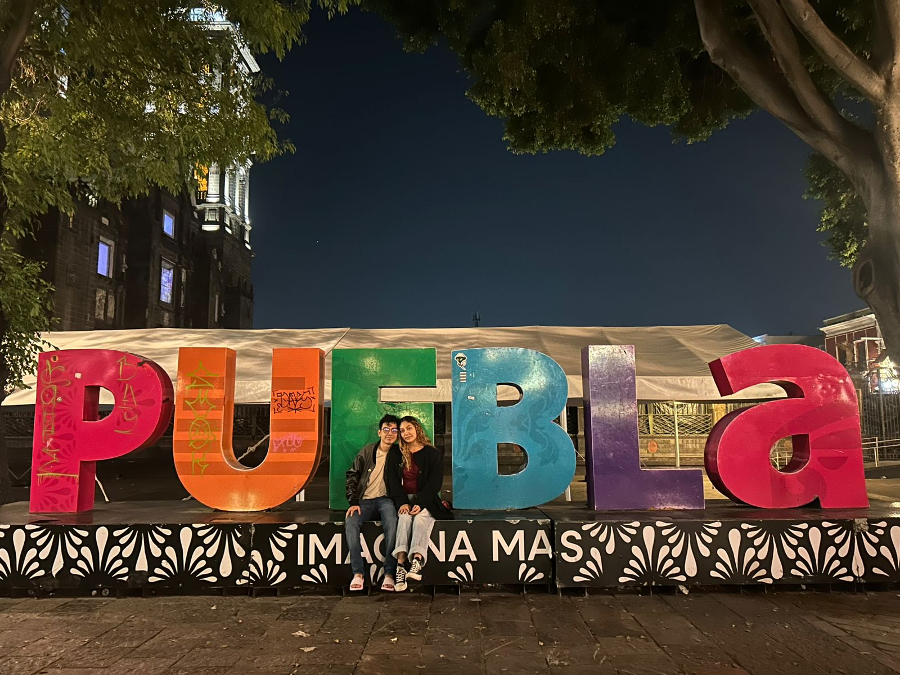
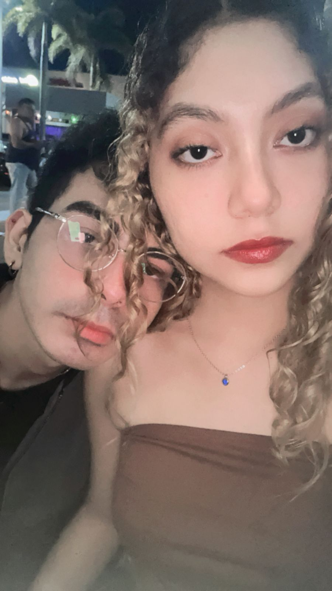
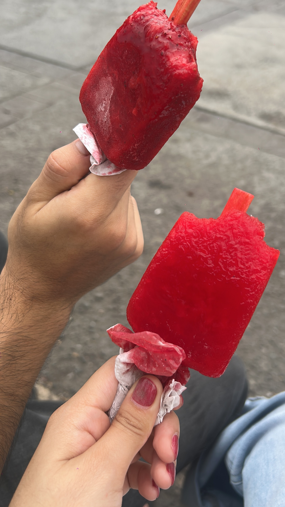

Hubo un día, allí en tu casa, donde el tiempo simplemente dejó de importar. Me invitaste a reconectar, sin saber que aquel encuentro cambiaría el mapa de mi vida entera. Hablamos durante horas, y en cada una de tus risas sentía que algo hermoso comenzamos a despertar, aunque el destino aún nos pedía un poco de paciencia.
Fue el azar, o quizás el destino, quien nos llevó a reencontrarnos varias veces; pero fue allí en una de esas ocasiones donde nuestra historia se escribió por primera vez. Y fue en ese preciso instante, entre risas y coincidencias, que descubrí el nombre de mi norte: mi pequeño y hermoso Cangrejito.

Todavía recuerdo la mezcla de ansiedad, miedo y adrenalina que me recorría cada vez que te miraba. Sabía que te quedarías dos semanas en casa, y aunque mi corazón lo deseaba más que nada, el miedo al rechazo era una sombra constante que no me dejaba ver con claridad. Me preguntaba si era el momento, si debía arriesgarme o esperar a que las piezas encajaran por sí solas.
Pero entonces, el miedo se disolvió en el instante en que me hiciste el hombre más feliz del mundo al aceptar ser mi novia. En ese momento, las dudas se transformaron en un viaje lleno de recuerdos, risas y anécdotas que, sin saberlo, estábamos guardando para el futuro. Al mirarte, supe la verdad: siempre había sido nuestro momento; solo que, al principio, no tuve la valentía necesaria para reconocerlo.

Dentro de todos mis planes y mapas trazados, nunca estuvo la idea de escaparnos un fin de semana. Solo eran dos días, pero se convirtieron en un paréntesis lleno de magia donde descubrí una ciudad nueva junto a la persona que amo.
Cada museo, cada edificio antiguo, cada catedral imponente y cada paso que dimos por sus calles se sintió distinto, cargado de un significado especial. Todo brillaba más porque estaba a tu lado, celebrando una fecha que, a día de hoy, sigo recordando con la misma nostalgia y el mismo cariño con el que viví cada minuto de aquel viaje. Fuiste tú quien convirtió esos dos días en un recuerdo eterno.

Marzo y abril se convirtieron en un torbellino de conciertos y nuevas experiencias. Aunque el camino tuvo sus altibajos, fueron dos meses que disfruté con toda mi alma; una gran aventura que, a pesar de lo breve, se sintió como una vida entera.
Vi a mis artistas favoritos en vivo, pero lo mejor no fue la música, sino cantarla a todo pulmón a tu lado. Entre fiestas y noches compartidas, terminábamos volviendo a casa para dormir abrazados, con el corazón lleno y la paz de saber que te conocía un poco más. En esos días no solo crecimos como pareja, sino que pude descubrir facetas tuyas que nunca imaginé, convirtiendo lo cotidiano en algo absolutamente maravilloso.

Hoy, seis meses después, aún no sabría cómo describir el amor con palabras exactas. Pero sé algo con total certeza: cada vez que pienso en su significado, mi mente vuela inmediatamente hacia ti. Pienso en lo nuestro, en la forma incondicional en que me apoyas y en cómo deseo seguir construyendo mi vida a tu lado.
Aunque el camino no siempre sea sencillo, la realidad es más clara que nunca: eres la mujer con la que sueño compartir cada uno de mis días. Contigo, cualquier plan cobra un sentido nuevo; disfruto de lo que hago, pero el mundo se vuelve extraordinario cuando estás incluida.
Apenas estamos escribiendo el prólogo de una historia que espero dure toda una vida. No me importaría entregarte mis años enteros, porque en el fondo de mi alma sé, sin ninguna duda, que eres la indicada.

Medio año juntos... y es solo el prólogo
¿Estás lista para escribir el resto del libro conmigo?
.